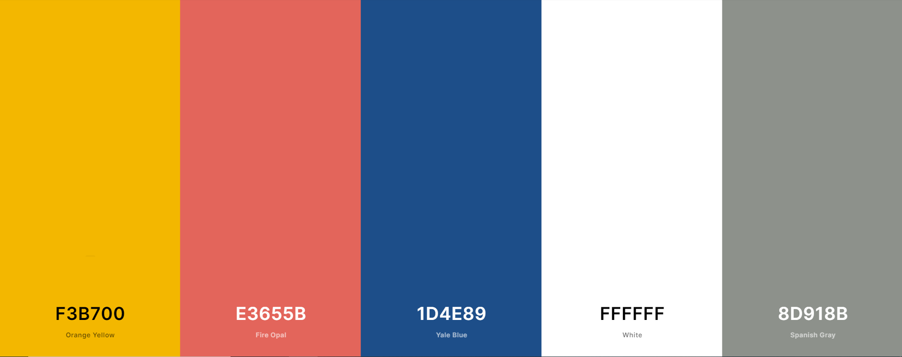

Final Project Proposal
Topic
A series of pages exploring basic shoes from different brands. Pages also explore signature basketball shoes.
Audience
Audience will be anyone who is looking for shoes or likes shoes or want to look at shoes not to buy because they don't want to be seen as basic.
Design and Style
I like 3 simple colours: Yellow, Blue and White. Website will have an emphasized on the simplicity aspect. Aiming for ease on the eyes of User.
Colour Scheme:
 Website Inspirations:Scope
Planing to have 3 pages:- Home Page
- Basic Shoes for brands
- Signature Basketball Shoes